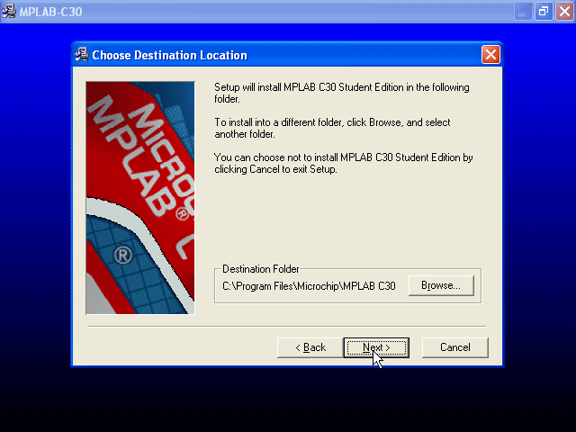
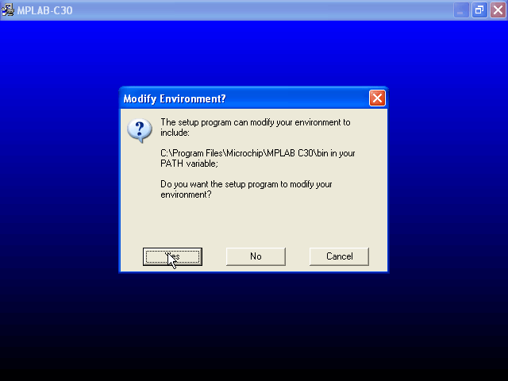
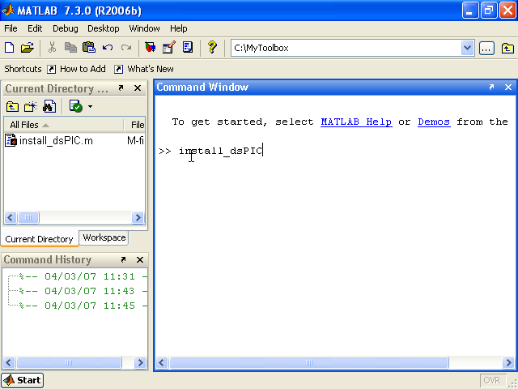
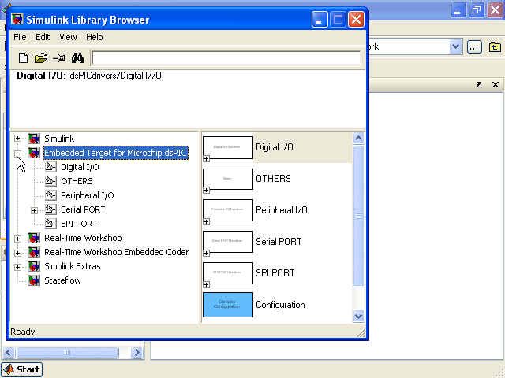

|
Requirement
The dsPIC blockset for Simulink use the C Compiler for PIC24 / dsPIC family. The following component must be installed.
| From Mathworks |
- Matlab
- Simulink
- Real-Time Workshop Embedded Coder
- Real-Time Workshop |
| From Microchip |
- MPLAB C30 compiler |
An evaluation version of the GCC compiler for dsPIC can be downloaded from the microchip website.
Download
Download the blockset for the matlab version installed on your system.
V0.98c
Release date : 12/06/2008
|
59 supported microcontrolleurs
!!! Need to update your dsPIC, PIC24 and PIC32 compiler
from the microchip website !!!
|
Go to the New download page:
dsPIC Toolbox for
Matlab R2006a
dsPIC Toolbox for
Matlab R2006b
dsPIC Toolbox for
Matlab R2007a
dsPIC Toolbox for
Matlab R2007b
dsPIC Toolbox for
Matlab R2008a |
24fJ128GA006, 24fJ128GA008, 24fJ128GA010, 24fJ64GA006, 24fJ64GA008, 24fJ64GA010, 24fJ96GA006, 24fJ96GA008, 24fJ96GA010, 30f2010, 30f2011, 30f2012, 30f3010, 30f3011, 30f3012, 30f3013, 30f3014, 30f4011, 30f4012, 30f4013, 30f5011, 30f5013, 30f5015, 30f5016, 30f6010A, 30f6011, 30f6012, 30f6013, 30f6014, 30f6015, 32MX360F512L, 32MX460F512L, 33fJ128GP206, 33fJ128GP306, 33fJ128GP310, 33fJ128GP706, 33fJ128GP708, 33fJ128GP710, 33fJ128MC506, 33fJ128MC510, 33fJ128MC706, 33fJ128MC708, 33fJ128MC710, 33fJ256GP506, 33fJ256GP510, 33fJ256GP710, 33fJ256MC510, 33fJ256MC710, 33fJ64GP206, 33fJ64GP306, 33fJ64GP310, 33fJ64GP706, 33fJ64GP708, 33fJ64GP710, 33fJ64MC506, 33fJ64MC508, 33fJ64MC510, 33fJ64MC706, 33fJ64MC710 |
See Release Notes and know bug
The blockset has been tested with MPLAB C30 compiler* (v3.10b), and C32 compiler (v1.02)
and with Matlab R2006a, R2006b, R2007a, R2007b.
*Will not work anymore with C30 (v2.05 , v3, v3.01)
The evaluation version support all microchip microcontrollers listed above.
Six Input/Output pins can be used with the evaluation version.
The Limit of Six Input/Output pins of the evaluation version should be sufficient for project like motor control, sensor filtering and sensor fusion or any projects that requires low number of input/output. The evaluation version of the blockset is therefore aimed at hobist or educational institutions.
Some peripherals requires more I/O pin that the number of I/O pin that are used ; for example using the UART Tx Port also enable the Rx port.
The block 'C Function Call' is not available on the evaluation version.
The installation procedure is detailed below. An animation of the installation process is available on the Example page.
Complete version :
To obtain a version without limitation, go to the following page
Installation :
C30 must be installed in the default directory : C:\Program File\Microchip\MPLAB C30
Download it on the microchip website (direct link here)

The path must be included to the environment : respond yes 
Set-Up the blockset for matlab :
Start Matlab ; go to the repertory where you unziped the installation .m file ; execute it by typing its name at the matalb prompt ( >>install_dsPIC ). The blockset will be installed into the current repertory.

The blockset for the dsPIC and PIC24 is now accessible from the simulink block library:

Uninstall :
- remove the two repertory added into the matlab path.
- delete the toolbox repertory.
|
The Microchip name PIC, dsPIC, and MPLAB are
registered trademarks of Microchip Technology Inc.
MATLAB, Simulink, and Real-Time Workshop are
registered trademarks of The MathWorks, Inc.
| Lubin Kerhuel 's Website |
Contact : [adresse e-mail retirée] |
|
|